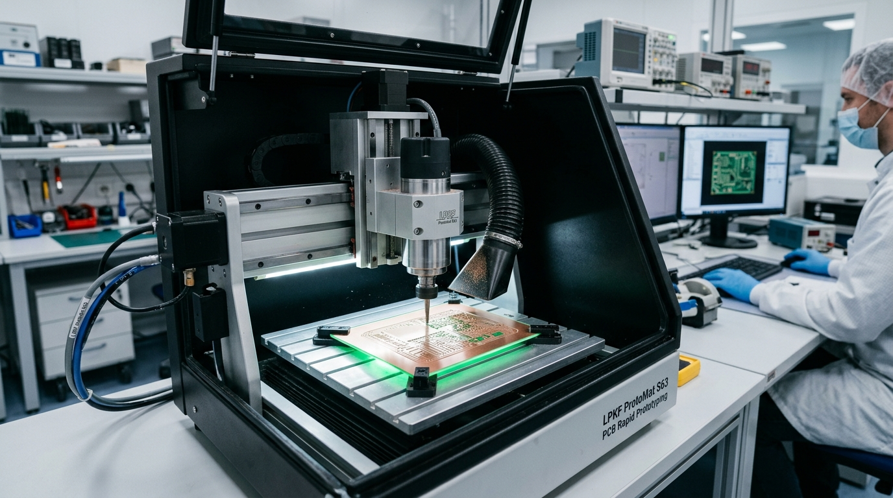

Chemical-Free PCB Prototyping vs Traditional Wet Chemical Etching: A 2026 Engineering, Cost & Environmental Audit
Why leading defense electronics labs, automotive R&D centers, and engineering institutes in India are phasing out hazardous ferric chloride (FeCl₃) baths in favor of 60,000 RPM high-speed CNC isolation milling with auto-leveling surface height compensation.